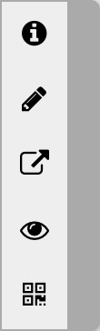

Main Toolbar
The Main Toolbar is visible at all time. The actions
available are context dependent.
Browsing actions
- Cycle between the main toolbar, the search toolbar and the system toolbar.
- Go to theHome page.The home page is /Home/index.html if user is not logged in. The home page is /Private/index.html if user is logged in.
- Edit current page.
-
Go forward to next page in history.
- Go back to previous page in history.
- Login/logout.
-
Login make visible and allow access to documents in the private directories (/Private/, /Restore/Private/, ... etc). Most system actions (Backup, Restore, ... etc) also require login.
-
- Show/hide left side panel.
Editing actions
- Cycle between the main toolbar, the search toolbar and the system toolbar.
- Quit editing without saving.
- Save and quit.
- Select an ancestor node.
- Edit the selected node. If the node is
an A or IMG element, it popup the Edit Link or Edit IMG dialog. If the node is a text node, it popup the Edit Text dialog
 . Otherwise, it edit the element tag and attributes as raw text.
. Otherwise, it edit the element tag and attributes as raw text. - Show main context menu which contains most of the editing actions.


Search actions
- Cycle between the main toolbar, the search toolbar and the system toolbar.
- Previous match.
- Next match.
- Toggle ignore case.
- Incremental search text input box
ImageViewer actions

-
Show the image viewer context menu.
- Go to Home page.
-
Rotate image by 90 degree in the viewer. This do not modify the image itself.
-
Go forward to next page in history.
- Go back to previous page in history.
- Annotate the image.
-
Export image with option to scale and rotate.
- Scan for barcodes in the image and save any messages found to the clipboard.
- Show image info.
AudioPlayer actions
- Go to Home page.
-
Go forward to next page in history.
- Go back to previous page.
System info

{kind=link}
{kind=link}
{kind=link}
{kind=link}
Audio recording status ()
When an audio recording is in progress, a microphone icon would be shown in the Main Toolbar. Click on the microphone icon stops the recording.
Audio playback status ()
When an audio is playing in background, a speaker icon would be shown in the Main Toolbar. Click on the speaker icon shows the
Audio Player
where you can control the audio playback again.